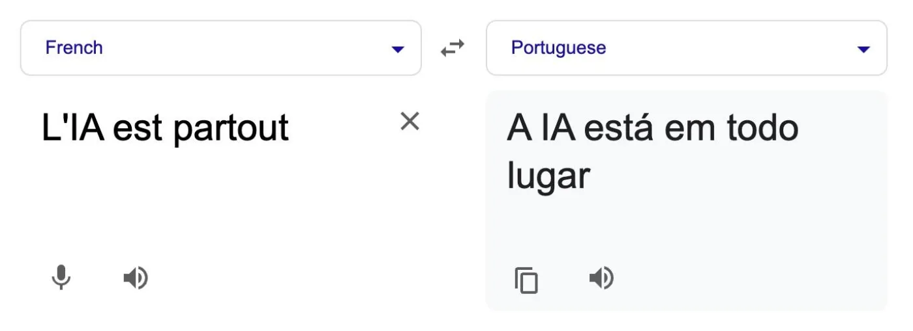
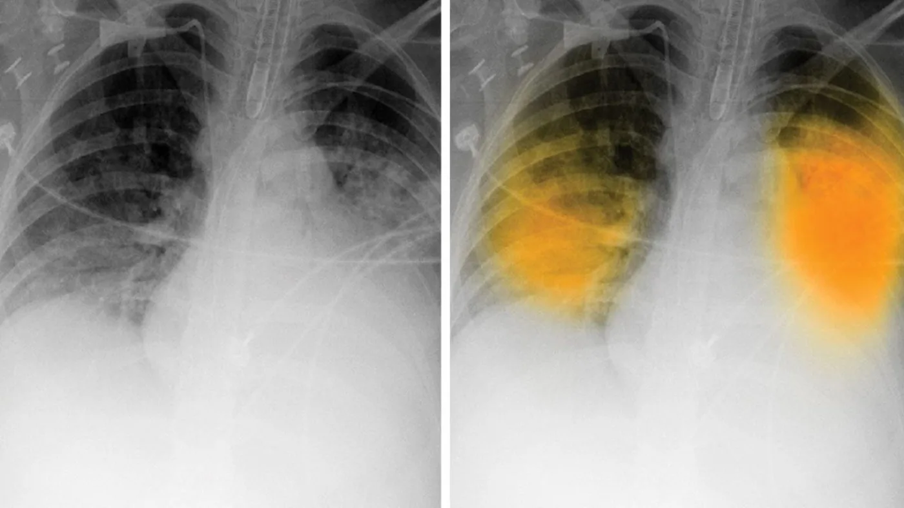
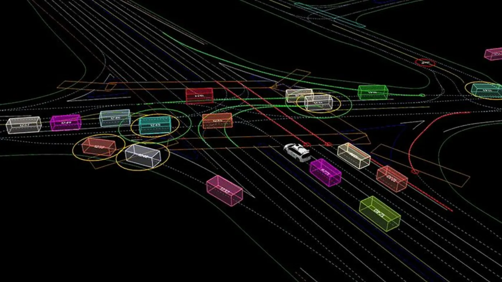

Ce qu'on retient
Les gestes qui changent quelque chose, et ceux qui n'en changent pas.
L'IA, ce n'est pas que ChatGPT
IA génératives conversationnelles
Elles produisent du texte. C'est la famille que compar:IA fait s'affronter dans l'arène.
Les autres IA
Elles trient, reconnaissent, prédisent. Elles travaillent depuis longtemps, sans faire parler d'elles.
Pour en découvrir plus : comparia.beta.gouv.fr
Une poignée de fournisseurs
OpenAI
Anthropic
Meta
Ils se partagent le terrain des modèles conversationnels.
Les autres IA travaillent déjà
Traduire

Lire une radiographie

Conduire

Regarder deux choses à la fois
Une réponse
Ce que coûte la question que je viens de poser.
Le même geste, partout
Ce que coûterait cette même question, posée par tout le monde, tous les jours.
« S'il te plaît », « merci »
Chaque mot de politesse est un jeton de plus à traiter.
À l'échelle de ChatGPT, ces jetons se comptent en électricité et en argent.

Sam Altman (@sama) sur X, 17 avril 2025, en réponse à @tomieinlove.
Les petits suffisent souvent
Ils consomment moins que les grands, pour des résultats de qualité comparable.
L'onglet Focus énergie du classement place chaque modèle selon son score de satisfaction et sa consommation moyenne pour 1 000 jetons. On y voit des petits modèles bien classés et sobres.
comparia.beta.gouv.fr/ranking. Score de satisfaction Bradley-Terry, calculé sur les votes de l'arène.
Où trouver les petits modèles
HuggingChat
Duck.ai
OpenRouter
Et aussi : le catalogue compar:IA, et Jan.
Catalogue : comparia.beta.gouv.fr/models
L'environnement n'est pas le seul sujet
Les données d'entraînement
Des textes écrits par des gens, repris sans qu'on leur demande. Plusieurs procès sont en cours.
Le travail derrière
Des personnes trient, notent et filtrent les réponses, souvent loin d'ici et pour peu.
Ce que le modèle répète
Il reproduit les biais de ce qu'il a lu, et se trompe avec aplomb.
Cet atelier ne traite que l'énergie. Les trois autres sujets sont réels et se travaillent ailleurs.
La consommation est le seul de ces quatre sujets que compar:IA mesure et affiche.
Trois conseils pour finir
- Prenez des petits modèles : ils suffisent dans la plupart des cas.
- Pour chercher un fait vérifiable, préférez un moteur de recherche : il renvoie vers une source.
- Servez-vous de compar:IA pour repérer les bons modèles pour vos usages.
L'arène est à la racine du site, comparia.beta.gouv.fr, et le catalogue à comparia.beta.gouv.fr/models
Le moteur, pour la fiabilité
Le deuxième conseil vaut pour la fiabilité, pas pour l'énergie. Les seuls chiffres mesurés par les fournisseurs (0,24 Wh chez Google, 0,34 Wh chez OpenAI) sont du même ordre que le seul chiffre publié pour une recherche web, 0,3 Wh, qui date de 2009.
Aucun moteur de recherche ne publie de chiffre récent.